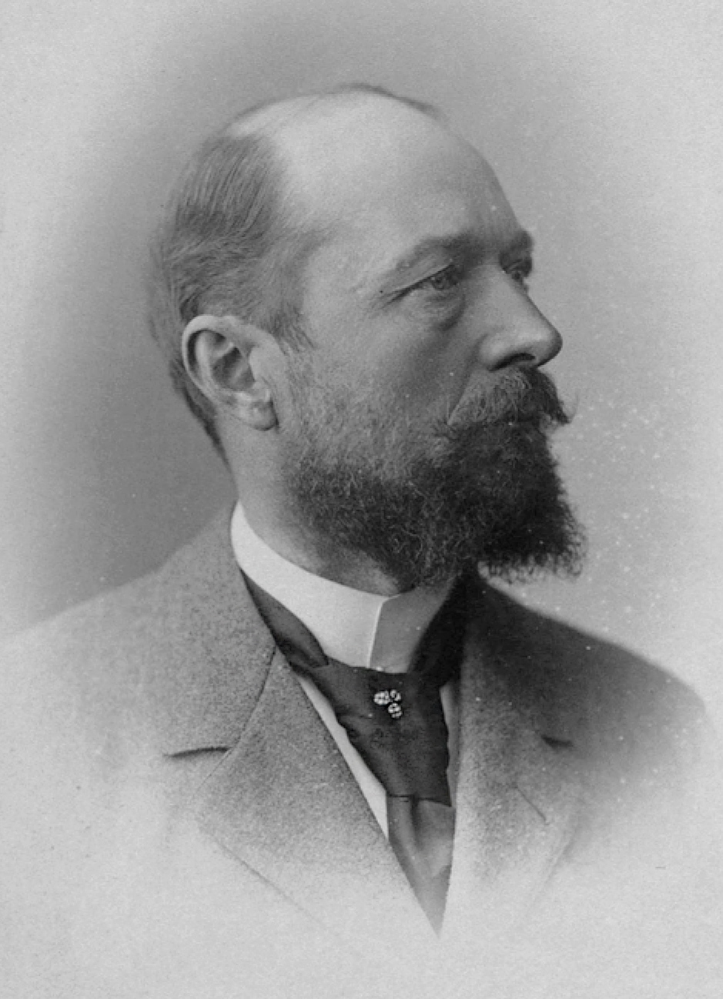

特异性免疫（上）：体液免疫
本期导读
两个信号 · 浆细胞 · 二次免疫

视频原话 · 导读3 句
- 同学们好！这节课梳理人教版选择性必修一第四章第二节的上半部分——体液免疫。8.1s
- 体液免疫是免疫调节的核心，高考常考B细胞的激活、哪些细胞能识别抗原，以及二次免疫的曲线。9.9s
- 我们按七个考点梳理，每个考点都讲清楚怎么考、怎么做。5.6s
病原体的识别01#
能识别自身的分子标签 → 一般不攻击自身细胞
考法
识别的本质：受体与抗原特异性结合；受体的化学本质是蛋白质
视频原话5 句
- 考点一，免疫系统怎样识别病原体？3.9s
- 人体所有细胞的细胞膜表面，都有作为分子标签起作用的蛋白质，就像身份标志，能被自身的免疫细胞识别，所以免疫细胞一般不攻击自身细胞。13.4s
- 病毒、细菌等病原体也带有各自的身份标签，它们能引发免疫反应，就是抗原。7.8s
- 免疫细胞靠细胞表面的受体识别抗原。一个B细胞或T细胞，只能识别一种特定的抗原。8.7s
- 考法：识别的本质是受体与抗原的特异性结合；受体的化学本质是蛋白质。7.7s
B细胞的激活02#
易错
B细胞需要两个信号才开始分裂、分化；细胞因子是“促进”，不是两个信号之一
视频原话6 句
- 考点二，体液免疫的过程。体液免疫主要靠B细胞产生抗体，消灭体液中的病原体。8.6s
- 一些病原体可以和B细胞直接接触，这为激活B细胞提供了第一个信号。6.9s
- 另一些病原体被树突状细胞、B细胞等抗原呈递细胞摄取、处理，呈递在细胞表面，然后传递给辅助性T细胞。10.9s
- 辅助性T细胞表面的特定分子发生变化，并与B细胞结合，这是激活B细胞的第二个信号。8.7s
- 辅助性T细胞开始分裂、分化，并分泌细胞因子，细胞因子能促进B细胞的分裂、分化过程。9.6s
- 易错：B细胞要受到两个信号的刺激才开始分裂、分化；细胞因子的作用是促进，它不是那两个信号之一。10.1s
浆细胞与记忆B细胞03#
抑制病原体的增殖
和对人体细胞的黏附
和对人体细胞的黏附
易错
抗体只能由浆细胞产生；一个浆细胞只产生一种抗体
视频原话6 句
- 考点三，B细胞活化以后，开始分裂、分化，大部分分化为浆细胞，小部分分化为记忆B细胞。9.2s
- 浆细胞产生和分泌大量抗体，抗体随体液在全身循环，与这种病原体结合。7.7s
- 抗体与病原体结合，可以抑制病原体的增殖，或者抑制它对人体细胞的黏附。7.3s
- 多数情况下，抗原和抗体结合后会形成沉淀等，进而被其他免疫细胞吞噬消化。7.7s
- 记忆B细胞可以存活几年甚至几十年，当再接触这种抗原时，能迅速增殖、分化。8.3s
- 易错：抗体只能由浆细胞产生，一个浆细胞只产生一种抗体。6.4s
识别抗原的细胞04#
✓ 特异性识别
B细胞
辅助性T细胞
记忆B细胞
△ 能识别，无特异性
树突状细胞
巨噬细胞
✗ 不能识别
浆细胞
解题方法
浆细胞是唯一不能识别抗原的；巨噬细胞、树突状细胞不具特异性；其余淋巴细胞都能特异性识别
视频原话5 句
- 考点四，哪些细胞能识别抗原？这是选择题的高频考点。6.0s
- 在体液免疫中，B细胞、辅助性T细胞和记忆B细胞都能特异性识别抗原。7.4s
- 抗原呈递细胞中的树突状细胞、巨噬细胞能识别抗原，但没有特异性。7.0s
- 浆细胞不能识别抗原，它只负责分泌抗体。4.4s
- 解题方法：浆细胞是唯一不能识别抗原的；巨噬细胞、树突状细胞能识别但不具特异性；其余的淋巴细胞都能特异性识别。11.8s
二次免疫05#
- 同种抗原再次侵入
- →记忆B细胞
- 增殖、分化 →浆细胞
- 快速产生 →大量抗体
| 比较项目 | 初次免疫 | 二次免疫 |
|---|---|---|
| 反应速度 | 较慢 | 更快 |
| 抗体数量 | 较少 | 更多、更强 |
| 浆细胞来源 | B细胞 | 主要来自记忆B细胞 |
往往在病原体致病之前就把它消灭了
易错
记忆B细胞不产生抗体，先增殖、分化为浆细胞；记忆细胞只对同种抗原起作用
视频原话4 句
- 考点五，二次免疫。当同种抗原再次侵入机体时，记忆B细胞迅速增殖、分化，分化后快速产生大量抗体。11.2s
- 与初次免疫相比，二次免疫反应更快、更强，产生的抗体更多，往往在病原体致病之前就把它消灭了。9.8s
- 二次免疫中的浆细胞，主要来自记忆B细胞，也有一部分来自B细胞。6.6s
- 易错：记忆B细胞自己不产生抗体，它要先增殖、分化为浆细胞；记忆细胞只对同种抗原起作用。9.6s
二次免疫曲线06#
二次免疫：更快、更高
初次免疫：抗体上升慢，峰值低
二次免疫：抗体上升快，峰值高
患病程度：二次免疫时很轻甚至不发病
疫苗 = 先经历一次初次免疫，留下记忆细胞和抗体
解题方法
上升更快、峰值更高的一段 = 二次免疫；画图时从第二次接触抗原开始上升
视频原话5 句
- 考点六，二次免疫的曲线。第一次接触抗原后，抗体浓度上升较慢，峰值较低。8.2s
- 第二次接触同种抗原后，抗体浓度迅速上升，峰值远高于第一次。6.5s
- 患病程度的曲线正好相反：二次免疫时患病程度很轻，甚至不发病。7.1s
- 接种疫苗正是利用这个原理：相当于先让人体经历一次初次免疫，留下记忆细胞和抗体。8.4s
- 解题方法：抗体浓度上升更快、峰值更高的一段就是二次免疫；画曲线时，二次免疫要从第二次接触抗原的时间开始上升。11.8s
抗体的本质与分布07#
抗体 = 蛋白质（免疫球蛋白），属于分泌蛋白
- 核糖体（合成）
- →内质网
- →高尔基体
- 胞吐 →细胞外
全过程由线粒体供能
血清（主要）
组织液
外分泌液（如乳汁）
考法
浆细胞内质网、高尔基体发达；抗体在细胞外起作用 → 细胞内的病原体要靠细胞免疫
视频原话4 句
- 考点七，抗体的本质与分布。抗体的化学本质是蛋白质，也叫免疫球蛋白。7.6s
- 抗体属于分泌蛋白：在核糖体上合成，经内质网、高尔基体加工，以胞吐的方式分泌，整个过程由线粒体供能。10.5s
- 抗体主要分布在血清中，也分布在组织液和外分泌液中，比如乳汁。6.3s
- 考法：浆细胞的内质网和高尔基体发达；抗体在细胞外起作用，所以进入细胞内的病原体，要靠细胞免疫来对付。10.8s
易错速查✓
先自己判断，再点按钮查看对错与解析。
- 1浆细胞能特异性识别抗原说法错误：浆细胞不能识别抗原
- 2激活B细胞需要两个信号说法正确。
- 3记忆B细胞能直接产生大量抗体说法错误：先增殖分化为浆细胞
- 4二次免疫反应更快、更强说法正确。
- 5一个浆细胞能产生多种抗体说法错误：只能产生一种抗体
- 6抗体主要分布在细胞内说法错误：主要分布在血清中
抓住两个信号，体液免疫不丢分！
视频原话 · 易错速查5 句
- 最后，用六道判断题检验一下。3.6s
- 浆细胞能特异性识别抗原？错，浆细胞不能识别抗原。激活B细胞需要两个信号？对。9.8s
- 记忆B细胞能直接产生大量抗体？错，要先增殖分化为浆细胞。二次免疫反应更快、更强？对。10.9s
- 一个浆细胞能产生多种抗体？错，只能产生一种。抗体主要分布在细胞内？错，主要分布在血清中。10.8s
- 七个考点串起来：受体识别抗原，两个信号激活B细胞，浆细胞分泌抗体，记忆细胞带来二次免疫。掌握这些，体液免疫就能稳稳拿分！我们下期再见！14.9s
图片来源
图片来源：Wikimedia Commons —— Luigi Lamarra《Emil Behring 1896 Neapel》Public domain
Photo: Luigi Lamarra, public domain